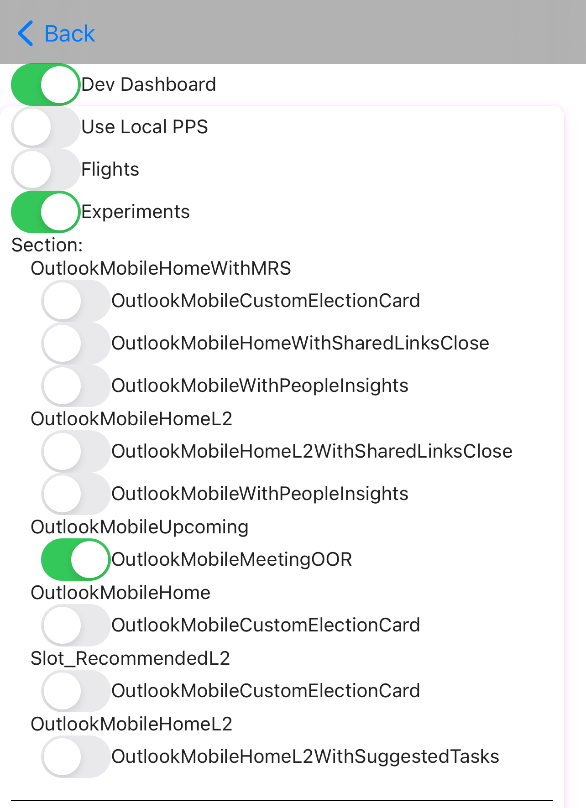

In the context of feed-ios-testapp
When testing experiments, we have to make code changes to test if what we're working on has the desired effect.
An easy to use interface (similar to Feature Flags in OM) which we can use to turn flights and experiments on/off.
An easy to use interface (similar to Feature Flags in OM) which we can use to turn flights and experiments on/off.
| Pro | Con | |
| Quick testing of experiments and flights | Have to remember initial set up | |
Step 1: Add your new experiment to experiments
export const experiments: Experiment[] = [
...
{
section: "OutlookMobileHomeL2",
experiments: [
"OutlookMobileHomeL2WithSharedLinksClose",
"OutlookMobileWithPeopleInsights",
],
},
...
];
const { data } = useQuery(query, {
...
variables: {
...
experiments:
props.slot && __DEV__ && experimentsConfig
? getEnabledExperiments(props.slot,experimentsConfig)
: props.experiments,
// experiments: props.experiments,
},
...
});
